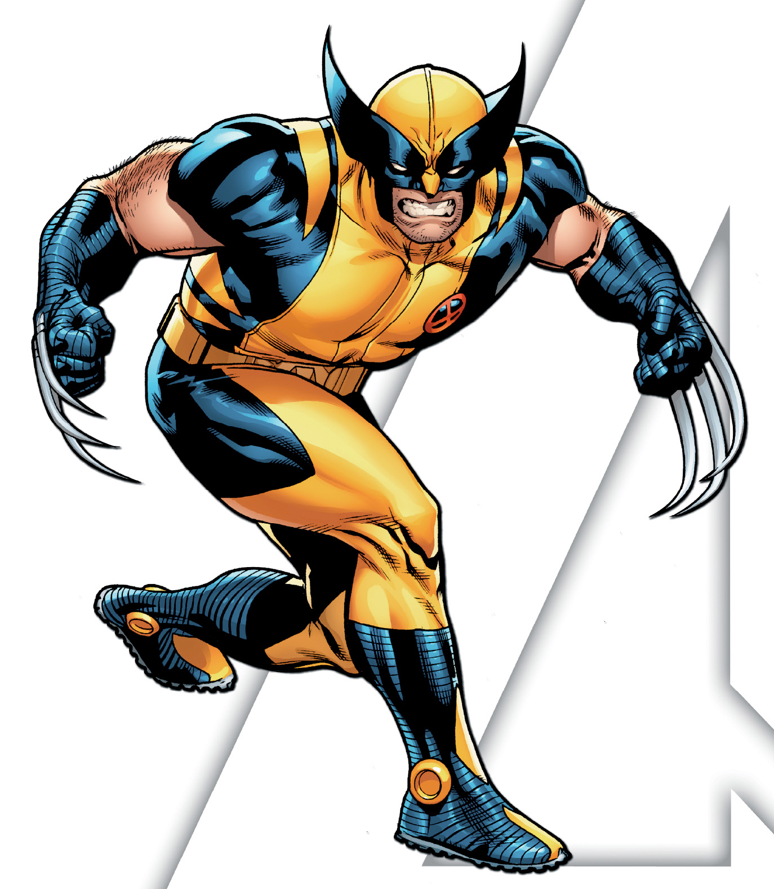

Lobezno Creado por Roy Thomas (guion), John Romita Sr. (diseño), Herb Trimpe (dibujos) Originado en 1974, The Incredible Hulk #180  Es un miembro importante dentro de los X-Men, destaca por ser un superheroe que nunca muere y tiene garras de adamantium. Tornar a l'inici